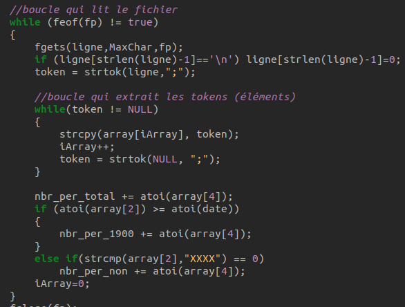
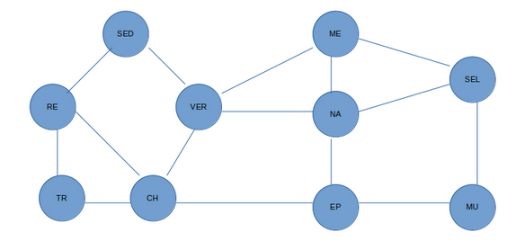
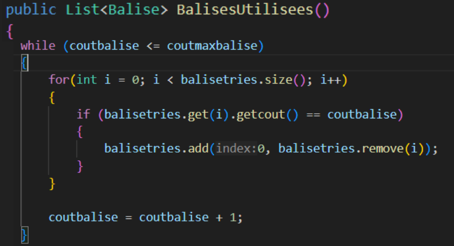
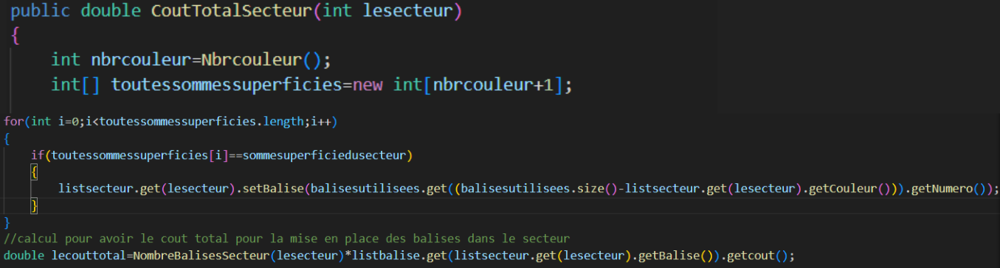
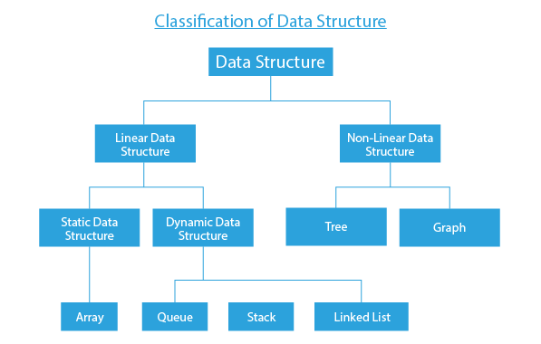

Optimiser des applications informatiques
L'algorithmique est le cœur battant de l'informatique. Elle permet de résoudre des problèmes complexes de manière systématique et efficiente. Dans ce module, nous avons appris à concevoir, analyser et améliorer des algorithmes, en nous concentrant sur leur efficacité et leur performance. Comprendre les principes de base des algorithmes nous permet de créer des solutions robustes et optimisées, répondant aux exigences croissantes des utilisateurs et des systèmes informatiques modernes.
Ressources
Au cours de l'année, j'ai mobilisé plusieurs ressources issues des enseignements reçus pour développer et optimiser des applications informatiques. Les cours d'algorithmie ont été essentiels pour comprendre les principes fondamentaux de la conception d'algorithmes efficaces. Le langage C m'a permis de me familiariser avec la manipulation bas-niveau des données et la gestion de la mémoire, ce qui est crucial pour écrire des programmes performants. Parallèlement, le langage Java a été utile pour développer des applications plus complexes et orientées objet, ce qui m'a aidé à structurer mon code de manière plus claire et modulaire.
Ces enseignements m'ont non seulement permis de mieux comprendre les concepts théoriques mais aussi de les maîtriser en pratique. En travaillant sur divers projets et exercices, j'ai pu appliquer ces connaissances, ce qui a renforcé ma compréhension et m'a aidé à identifier les meilleures pratiques pour chaque langage de programmation.

Cependant, pour aller au-delà des connaissances de base et résoudre des problèmes plus complexes, j'ai dû chercher des ressources supplémentaires. J'ai consulté des livres spécialisés trouvé au sein de la bibliothèque universitaire, des tutoriels en ligne, des forums de développeurs et des documentations officielles des langages C et Java. Ces ressources m'ont fourni des perspectives différentes et des solutions alternatives, enrichissant ainsi mon apprentissage.

Pour les SAÉ associé j’ai aussi bien utilisé les concepts algorithmique de base en C et en java que les algorithmes mathématiques poussé notamment pour les statistiques et la théorie des graphes. Les notions fondamentales, telles que les structures de données (tableaux, listes chaînées, piles, files) et les techniques de tri et de recherche, ont été mises en œuvre pour résoudre divers problèmes de manière efficace. La théorie des graphes, quant à elle, m'a permis de résoudre des problèmes complexes de connectivité et d'optimisation à travers des algorithmes tels que ceux de Dijkstra pour les chemins les plus courts, de Kruskal et de Prim pour les arbres couvrants minimaux, et d'autres algorithmes de parcours comme ceux en profondeur (DFS) et en largeur (BFS).
Implication
Durant la SAÉ 2.02, j’ai été convié à la réalisation d’algorithmes de calcul de balises utilisées par secteur et du coût total engendré. Cette tâche m'a permis de mettre en pratique les compétences acquises en algorithmique, en utilisant des structures de données appropriées et en optimisant les calculs pour obtenir des résultats précis et rapides. En appliquant les concepts de programmation en C et en Java, j'ai développé des solutions capables de traiter efficacement de grandes quantités de données et de fournir des analyses détaillées, tout en tenant compte des contraintes de performance et de précision requises par le projet. Cette expérience m'a offert une compréhension approfondie de l'importance de l'optimisation algorithmique dans des contextes pratiques et m'a préparé à relever des défis similaires à l'avenir.

Au sein du groupe de travail, j'ai maintenu une interaction régulière et constructive avec les autres membres. Nous avons collaboré étroitement tout au long du projet, en partageant nos idées, nos compétences et nos ressources pour atteindre nos objectifs communs. Lors des réunions de groupe, j'ai activement participé aux discussions, en apportant des suggestions et en écoutant attentivement les points de vue des autres membres. Nous avons également réparti les tâches de manière équitable, en tenant compte des forces et des préférences individuelles, ce qui a favorisé une dynamique de travail efficace et harmonieuse.
J'ai été responsable de la réalisation des méthodes lié aux coûts de l’installation des balises ce qui m'a donné l'occasion de prendre des décisions et de résoudre des problèmes de manière indépendante. Cependant, j'ai également su reconnaître les moments où la collaboration et la contribution collective étaient nécessaires, ce qui m'a permis de rester aligné sur les objectifs du groupe tout en valorisant les perspectives et les idées de chacun.


Apprentissages
Au cours de la SAÉ, j'ai constaté que je me sentais plus à l'aise avec les concepts de structure de données et leur implémentation dans des algorithmes complexes. J'ai développé une compréhension plus profonde des différentes structures de données telles que les tableaux, les listes chaînées, les arbres et les graphes, ainsi que de leurs avantages et inconvénients dans divers contextes. Cette maîtrise accrue m'a permis d'aborder les problèmes de manière plus systématique et de concevoir des solutions optimisées, en choisissant les structures de données les mieux adaptées à chaque cas d'utilisation.
Mes points forts résident dans l'implémentation d'algorithmes mathématiques dans un programme. Pour consolider ces compétences, je pourrais envisager plusieurs approches. Tout d'abord, je pourrais approfondir mes connaissances en mathématiques appliquées, en particulier dans les domaines tels que l'algèbre linéaire, l'analyse numérique et la théorie des graphes.
Et mes points faibles étaient le choix de la bonne structure de donnée que j’ai finalement pu choisir en comprenant mieux les caractéristiques et les avantages de chaque structure en fonction du contexte du problème à résoudre. Pour renforcer cette compétence, je pourrais me concentrer sur l'étude approfondie des différentes structures de données disponibles, en comprenant leurs performances, leurs limitations et leurs utilisations appropriées.
Mes objectifs pour mes futures projets sont d’optimiser au maximum de mes compétences les algorithmes mathématiques afin de drastiquement diminué la complexité de celles-ci.